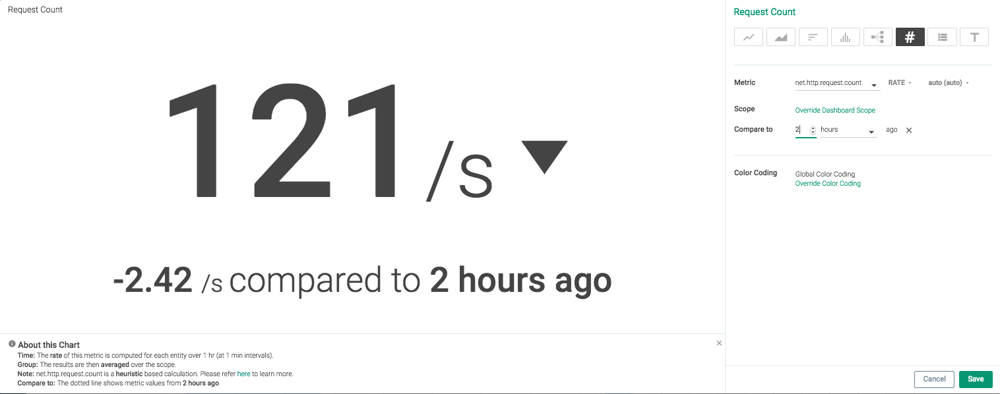
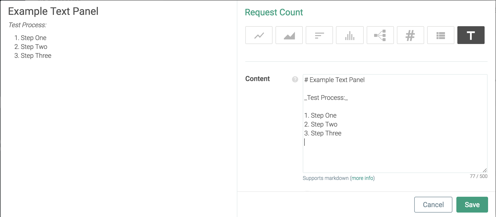
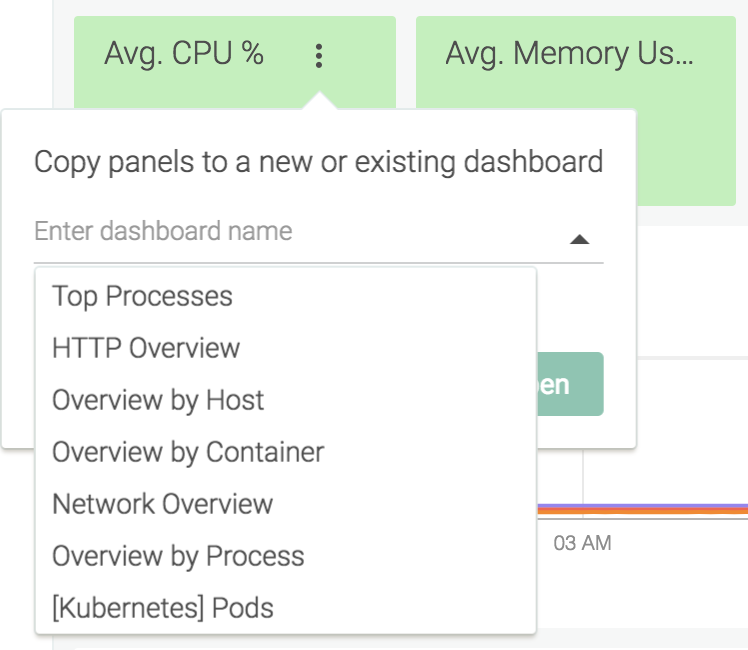

Configure Panels
Contents
Panel Creation
Create a New Panel
Note
Refer to Configure Dashboards for more information on configuring a pre-built dashboard.
To add a new panel to a dashboard:
On the
Dashboardstab, select the relevant dashboard from the left-hand panel.Click the
Add Panel(cross) icon.Note
If you are configuring a blank dashboard, the available panel types will be displayed, and can be selected directly, rather than clicking the
Add Panelicon:Select a panel type:
Optional: Click the panel name to change it. Once the name is edited, click elsewhere in the panel to save the change.
Configure the relevant scope, segmentation, and metrics for the panel.
Note
Refer to the Panel Types section for information on each type of panel.
Click the
Savebutton to create the new panel.
Duplicate a Panel
Hover over the desired panel, click the
Settings(ellipsis) icon, and selectDuplicate Panel.
Panel Types
Line
 |
Note
Line panels provide additional functionality to other panel types, by allowing users to compare the current value to historical values. The image below shows the current net.http.request.count rate compared to the value six hours ago:
 |
Area
 |
Top List
 |
Histogram
Topology
 |
Number
Note
Number panels provide additional functionality to other panel types, by allowing users to compare the current value to historical values. The image below shows the net.http.request.count value compared to the value two hours ago:
|  |
Table
Text
Text panels display custom markdown formatted text. The example below uses a text panel as a reminder list of the testing steps for a procedure.
|  |
Text Panel Markdown
Headers:
# H1 ## H2 ### H3 #### H4 ##### H5 ###### H6 H1 ====== H2 ------
Emphasis:
*italics* or _italics_ **bold** or __bold__ **combined _emphasis_** ~~strikethrough~~
Lists:
1. First ordered list item
2. Second item
* Unordered sub-list.
Sub-paragraph within the list item.
1. Third item
8. First ordered sub-list item.
103. Fourth itemNote
The list item number does not matter. As shown in the example below, the formatting defines the lists.
Note
List items can contain properly indented paragraphs, using white space.
Note
Unordered list can use: *, -, or +.
Linebreaks:
This is the first sentence. This line is separated from the one above by two newlines, so it will be a *separate paragraph*. This line is also a separate paragraph. This line is only separated by a single newline, so it's a separate line in the *same paragraph*.
Note
Trailing spaces can be used for line-breaks without creating a new paragraph. This behavior is contrary to the typical GFM line break behavior, where trailing spaces are not required.
Panel Management
Copy Panels to a Different Dashboards
Copy a Single Panel
To copy a single panel to a different dashboard:
From the
Exploretab, select the desired drill-down view.Hover over the desired panel, select the
Settings(ellipsis) icon, and selectCopy Panel.
Open the drop-down menu and select the desired dashboard, or use the text-field to search through existing dashboards.
 Note
To copy the panel to a new dashboard, enter a name for the new dashboard in the text-field instead.
Click the
Copy and Openbutton to save the changes and navigate to the configured dashboard.
Copy All Panels
To copy all panels in a drill-down view to a dashboard:
From the
Exploretab, select the desired drill-down view.Select the
More Options(three dots) icon.Select
Copy to Dashboard:
Open the drop-down menu and select the desired dashboard, or use the text-field to search through existing dashboards.
Note
To copy the panel to a new dashboard, enter a name for the new dashboard in the text-field instead.
Click the
Copy and Openbutton to save the changes and navigate to the configured dashboard.
Create a Panel Alert
Alerts can be created directly from a dashboard panel:
Click the
More Options(three dots) icon.Select
CreateAlert.Configure the alert, and click the
Createbutton.Note
Form more information on creating alerts, refer to the Alerts documentation.
Export Panel Data
Some panel types allow for data to be exported via either a CSV or JSON file:
CSV files can be downloaded for table and line charts.
JSON files can be downloaded for line charts.
Export CSV
To export CSV of a metric:
On the
Exploretab, navigate to the desired drill-down view.Hover over the desired panel, select the
Settings(three dots) icon, and selectExport CSVfrom the drop-down menu.
A CSV file will be automatically downloaded to the local machine.
Export JSON
To export JSON of a metric:
On the
Exploretab, navigate to the desired drill-down view.Hover over the desired panel, select the
Settings(three dots) icon, and selectExport JSONfrom the drop-down menu.
A JSON file will be automatically downloaded to the local machine.
Delete an Existing Panel
To delete a panel from a dashboard:
Hover over the desired panel, click the
Settings(ellipsis) icon, and selectDelete Panel.Click the
Yes, deletepanel button to confirm, or theCancelbutton to keep the panel.